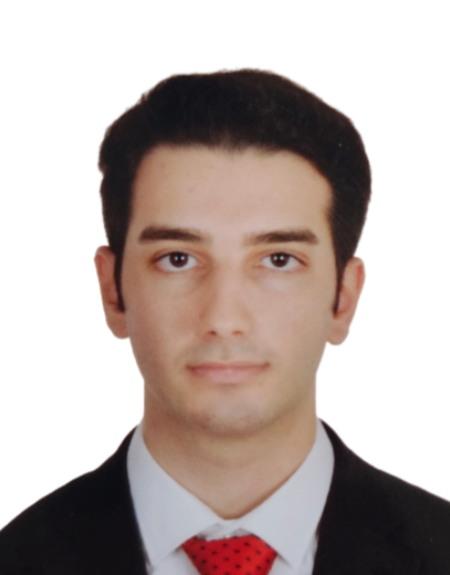

Chemical & Process Engineer with experience in pharmaceutical Quality Assurance (QA) and GMP environments. Actively seeking opportunities across Austria, the DACH region, and Europe.

I am a Chemical Engineer based in Vienna, Austria, currently enrolled in the University Preparation Programme (VWU) at TU Wien in preparation for the Master’s degree program in Chemical and Process Engineering. I have proven hands-on experience in pharmaceutical Quality Assurance (QA), GMP compliance, CAPA, deviation management, and process automation.
Work Authorization & Target Region:
Full work authorization available (no sponsorship or visa support needed). Actively seeking engineering, QA, and software-related opportunities primarily in Austria and the DACH region (Germany, Austria, Switzerland), as well as across Europe.
With an analytical mindset, meticulous attention to regulatory standards, and a passion for continuous process improvement, I strive to create tangible value for forward-thinking engineering and technology organizations.
TU Wien - Vienna, Austria
Marmara University - Istanbul, Turkey
Feel free to reach out for new career opportunities, projects, and collaborations.